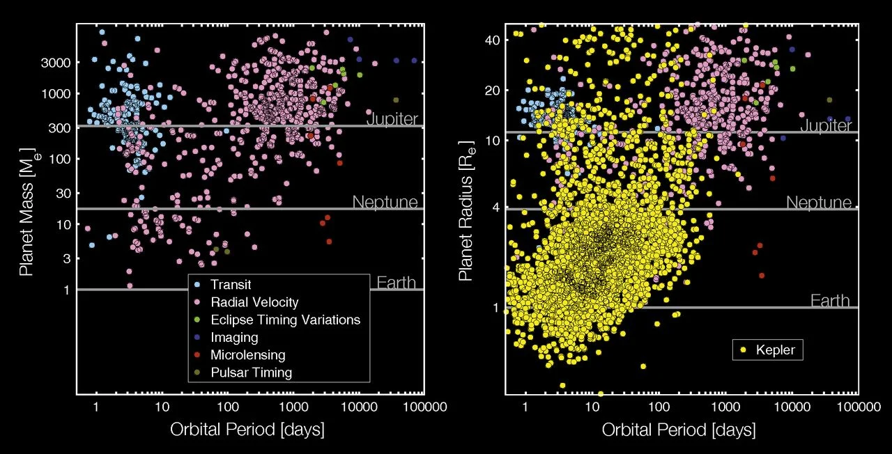

This image contains a list of potentially habitable exoplanets ranked by distance from Earth in light years. |
|
This image contains a diagram of the size of known and identified exoplanets in terms of the Earth's size, the Super Earth's size, Neptune's size, and Jupiter's size. |
|
 |
This image contains a bar graph that depicts the distribution of exoplanets by distance. |
|  | This image depicts the mass and radius of an exoplanet against the orbital period. It is further graphed in terms of various factors like the Radial Velocity and Pulsar Timing. |
This image shows an artist's depiction of a device that was built and was able to identify new exoplanets. |
|
This image depicts what an artist believes the Exoplanet Kepler 18f's surface would look like. |